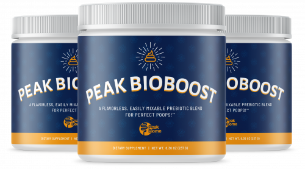

Peak BioBoost
Product profile · Marketplace data 2026-10-09 · Sales-page research 2026-10-09 · Categories: Food Supplements

Marketplace record
| Product type | Supplements - health |
|---|---|
| Price | $151.30 (Single payment) |
| Affiliate commission | 50% |
| Refund window | Per the vendor's sales page — check the official page before buying |
| Vendor | peakbiome (listed since 2022-07-18) |
| Marketplace stats* | Cart conversion 12% · cancel rate 6.91% · affiliate earnings/sale $71.84 |
* Vendor-side marketplace statistics reported by Digistore24; they depend on traffic quality and are not a forecast.
Vendor's marketplace description
GUARANTEED: 50% Commission! You will get 50% through the entire funnel. We use our own customer service team to try our best to save the sale. We keep our refunds and chargebacks low. We love our customers and our affiliates - Being a part of the Peak Biome family...means FAMILY. Put Money In Your Pocket DAILY!For Peak BioBoost - Most affiliates are making $1.50 - $2 EPC with some making nearly $4…
From the vendor's sales page
Page title: Peak BioBoost | Peak Biome | Prebiotic For Bowel Regularity
Meta description: Peak BioBoost from Peak Biome is a prebiotic fiber to help with bowel regularity.
Section headlines
- "I Was Totally Shocked When I Had A Bowel Movement Just 17 Minutes Later..."
- Now I Understand All This May Sound Unbelievable…
- Let me Quickly Introduce Myself...
- So for the next several YEARS I tried every possible solution to figure it out...
- I tried laxatives next… and quickly understood why they should be avoided at all costs...
- I tried every possible "natural" remedy you could ever think of…
- That's when I Discovered The REAL Reason Most People Having Pooping Issues...
- It's the SPEED of this process that determines how enjoyable or frustrating your poops are...
- It's a Poop Train!
- But here's where the problem comes in…
Opening copy
Add this "unusual nutrient" to coffee or tea to effortlessly empty your bowels every morning… and even poop out up to 10 pounds of bloat!
87-year-old Beveline was one of the millions of Americans suffering from frustrating, gas-causing, belly-bloating constipation.
After broken hip surgery forced her to take pain pills, she found herself struggling to maintain regular bowels.
Prices mentioned on the page: $49.95 · $44.95 · $179.70 · $119.85 · $150 · $9.95 · $19.95 · $14.95
CTA buttons: “Add to cart” · “Click Here To Choose Your Package”
Research method: raw HTML fetch · 10278 words on page · quality: rich · researched 2026-10-09. Full research file (MD) ↗
Where to check it out
Read the vendor's full sales page (current price, guarantee terms and bonuses are listed there):
View official sales page
That link is an affiliate link — if you buy through it we earn a commission from the vendor at no extra cost to you.